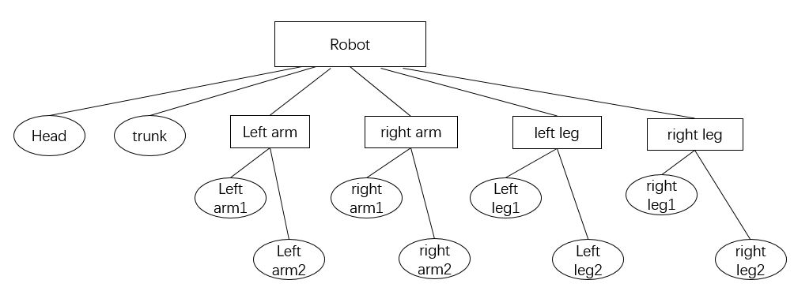

A Robot
A running robot. This is for practicing scene management.
Scene Management Framework
All objects in the scene are managed in a tree. The root is the scene. The leaves are single geometric objects, in this project, only sphere and cylinder are included.
In order to build the tree data structure, geometric groups are intruduced. Geometric groups are containers of single objects and other geometric groups.
Geometric groups and geometric objects can be rotated or translated globally or locally.
Moving globally means the movement is related to the coordinate of it's container.
Moving locally means the movement is related to it's own coordinate.
Coordinates are maneged by the class GeometricCoordinate
// my_objectmanager.h
class GeometricCoordinate {
private:
// mModel = mTranslation*mRotation
M3DMatrix33f mRotation;
M3DVector3f vTranslation;
public:
GeometricCoordinate();
// rotation related to the container's coordinate(rad)
void globalRotation(GLfloat angle, GLfloat x, GLfloat y, GLfloat z);
// translation related to the container's coordinate
void globalTranslations(GLfloat x, GLfloat y, GLfloat z);
// rotation related to the local coordinate(rad)
void localRotation(GLfloat angle, GLfloat x, GLfloat y, GLfloat z);
// translation related to the local coordinate
void localTranslation(GLfloat x, GLfloat y, GLfloat z);
// Rotation related to a special coordinate: parrell to the container's coordinate
// but ranslation with the local coordinate
void relativeRotation(GLfloat angle, GLfloat x, GLfloat y, GLfloat z);
// mModel = mTranslation*mRotation
void getMModel(M3DMatrix44f mModel);
void reset();
void resetRotation() {
m3dLoadIdentity33(mRotation);
}
};
GeometricCoordinate is inheritted by classes GeometricObject and GeometricGroupAll objects are managed in a tree, so they will move together wither their containers.
The Robot
In this project, the robot is managed in the following structure. Circles are objects and squares are groups.

Camera
Camera also uses the functions in GeometricCoordinate. It can be moved just like a normal GeometricObject.
// my_objectmanager.h
class Camera :public GeometricCoordinate {
private:
M3DMatrix44f mProjection;
public:
Camera();
void setViewFrustum(GLfloat fFov,GLfloat fAspect,GLfloat fNear,GLfloat fFar);
M3DMatrix44f& projectionMatrix();
M3DMatrix44f& viewMatrix();
};
//my_camera.cpp
void Camera::setViewFrustum(GLfloat fFov, GLfloat fAspect, GLfloat fNear, GLfloat fFar) {
m3dMakePerspectiveMatrix(mProjection, fFov, fAspect, fNear, fFar);
}//my_camera.cpp
M3DMatrix44f& Camera::viewMatrix() {
static M3DMatrix44f mV;
M3DMatrix44f temp;
getMModel(temp);
m3dInvertMatrix44(mV, temp);
return mV;
}Scene
The scene contains one camera, several groups and several objects.
Shader
In this project, the shader is quite simple. No textures. The only modifiable parameter is the direction of the parrel light.
The shader accepts a model matrix, a view matrix, a projection matrix and the position and normal direction of vertexes. These functions are in the namespace shader.
namespace shader {
void init();
void setParrelLight(GLfloat x,GLfloat y,GLfloat z);
void setModelMatrix(M3DMatrix44f mModel);
void setViewMatrix(M3DMatrix44f mView);
void setProjectionMatrix(M3DMatrix44f mProjection);
}vertex shader
void main(void){
gl_Position = mProjection*mView*mModel*vec4(vVertex,1.0);
mat4 mRotate = mModel;
mRotate[3] = vec4(0,0,0,1);
varyingVNormal = (mRotate*vec4(vNormal,1.0)).xyz;
}
fragment shader
void main(void){
float color = (0.35+dot(varyingVNormal,vLight)/1.5);
gl_FragColor = vec4(color,color,color,1);
}
Movement
$t$ is current time in milliseconds, $T$ is expected period of movement in milliseconds.
$$f = 2\pi\times\frac{t}{T}$$
Left arm rotates around it's local x axis:
$$angle = \pi + 0.5sin(t)$$
Left forearm rotates around it's local axis:
$$ angle = 0.5sin(f)-1$$
Left leg rotates around it's local x axis:
$$angle=\pi - 0.3 + 0.7sin(f+\pi)$$
Left shank rotates around it's local x axis:
$$angle=0.7+0.7sin(f+\pi)$$
Right arm and leg use the same equations, but has a phase difference of $\pi$.
The robot as a whole, moved up and down along y axis:
$$y=0.02sin(2f)$$
The robot also leans forward to seem more balanced.
Full Code
Dependencies
GLFW
GLAD
GLtools